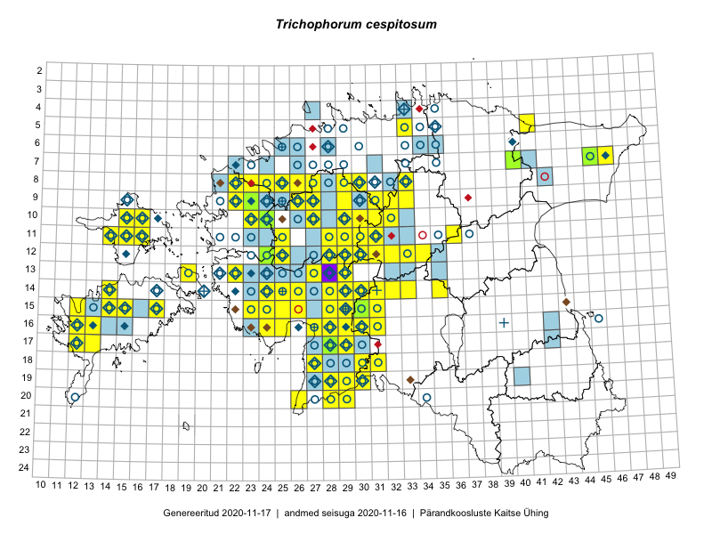

Trichophorum cespitosum
Uuendatud: 2016-12-02
Kaardile koondatud taksonid: Trichophorum cespitosum (L.) Hartm.

Kaart põhineb 88 kirjel, neist vaatlusi 87 ja eksemplare 1. Taksonit on leitud 72 ruudust.
Kuvatud viited 20 esimesele andmebaasikirjele, ülejäänud PlutoFis
- Tiit Hallikma, Indrek Tammekänd, Toomas Kukk: 2015-06-09: 12-29: ala
- Ott Luuk, Toivo Sepp: 2015-07-29: 09-31: ala
- Peedu Saar, Liina Oja: 2015-06-09: 17-28: ala
- Peedu Saar, Liina Oja: 2015-06-10: 14-31: ala
- Peedu Saar, Liina Oja: 2015-06-11: 15-29: ala
- Peedu Saar, Liina Oja: 2015-06-11: 16-29: ala
- Ott Luuk, Toivo Sepp: 2015-07-12: 10-31: ala
- Tiit Hallikma, Toomas Kukk: 2015-06-10: 15-30: ala
- Toomas Kukk, Tiit Hallikma: 2015-06-10: 15-31: ala
- Toomas Kukk, Tiit Hallikma: 2015-06-11: 11-29: ala
- Toomas Kukk, Tiit Hallikma: 2015-06-12: 12-34: ala
- Ott Luuk, Toivo Sepp: 2015-07-12: 11-31: ala
- Tiit Hallikma, Toomas Kukk: 2015-06-11: 10-29: ala
- Thea Kull: 2015-06-15: 10-16: ala
- Ott Luuk, Hannes Pehlak: 2015-06-10: 14-29: ala
- Ott Luuk, Hannes Pehlak: 2015-06-09: 12-30: ala
- Ott Luuk, Hannes Pehlak: 2015-06-09: 12-31: ala
- Jana-Maria Habicht, Ester Valdvee, Kirke Pilvik: 2015-05-17: 08-33: ala
- Indrek Tammekänd, Liisa Rennel, Agu Leivits, Hannes Pehlak, Irja Tammekänd: 2015-04-27: 15-24: ala
- Meeli Mesipuu, Timo Luhamäe: 2015-07-24: 05-41: ala